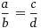

SEMEJANZA
Continuación de semejanza
Una homotecia de centro "O" y de razón "Y" es una correspondencia que a cada punto "P" tal que el segmento OP' es igual a r veces el OP.
La razón de homotecia es:
La figura homotética de una figura dada siempre es una figura semejante a ella. Dos figuras homotéticas se caracterizan por sus lados paralelos. Si dos figuras son homotéticas, entonces las rectas que unen los vértices correspondientes concurren en un punto llamado centro de homotecia.
Homotecia directa
Cuando dos figuras homotéticas están situadas de un mismo lado del centro de homotecia, se dice que la homotecia es directa y la razón simpre es un valor positivo.